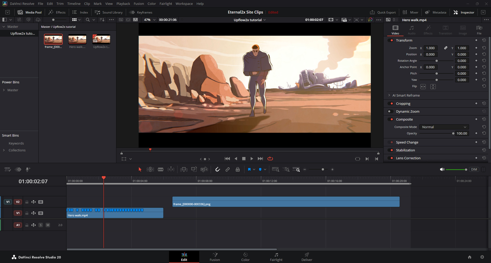
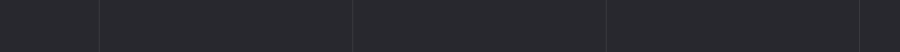
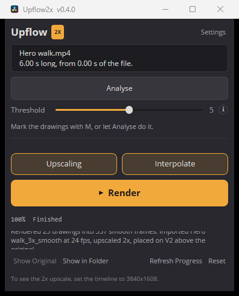

It works on the clip under the playhead.
Select the clip, then press M on each frame where a new drawing starts.
Or press Analyse, and it marks them for you.
Upscaling draws every frame at 2x.
Interpolate draws the in-betweens.
Resolve stays usable while it runs.
At a third of the speed, ready to time remap.